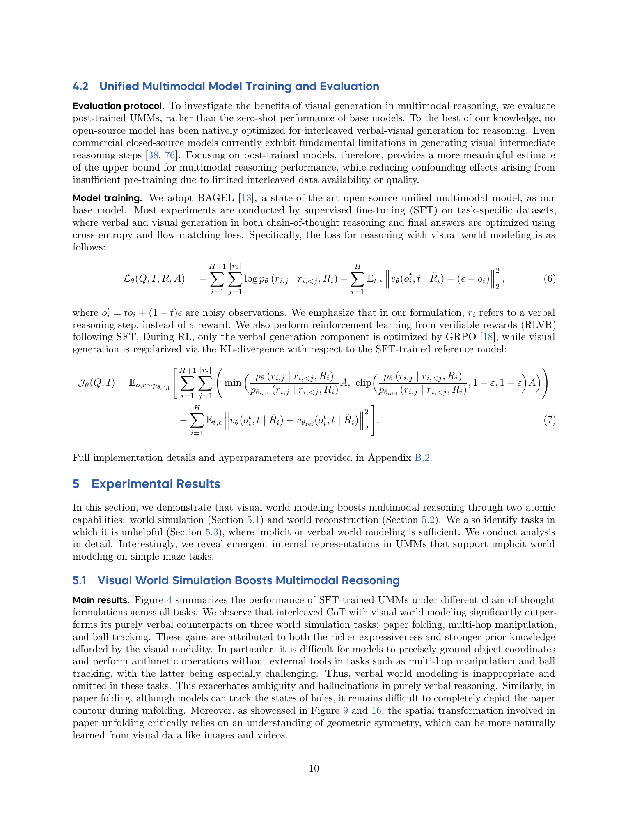
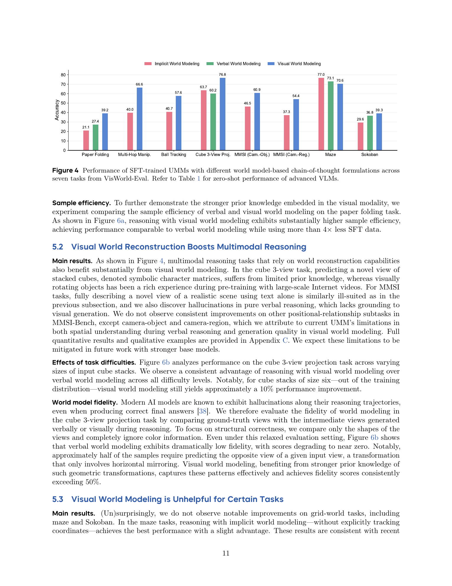
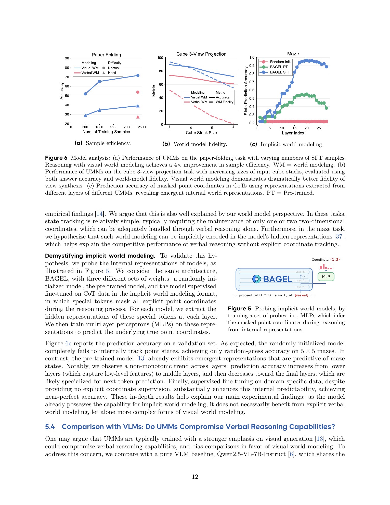
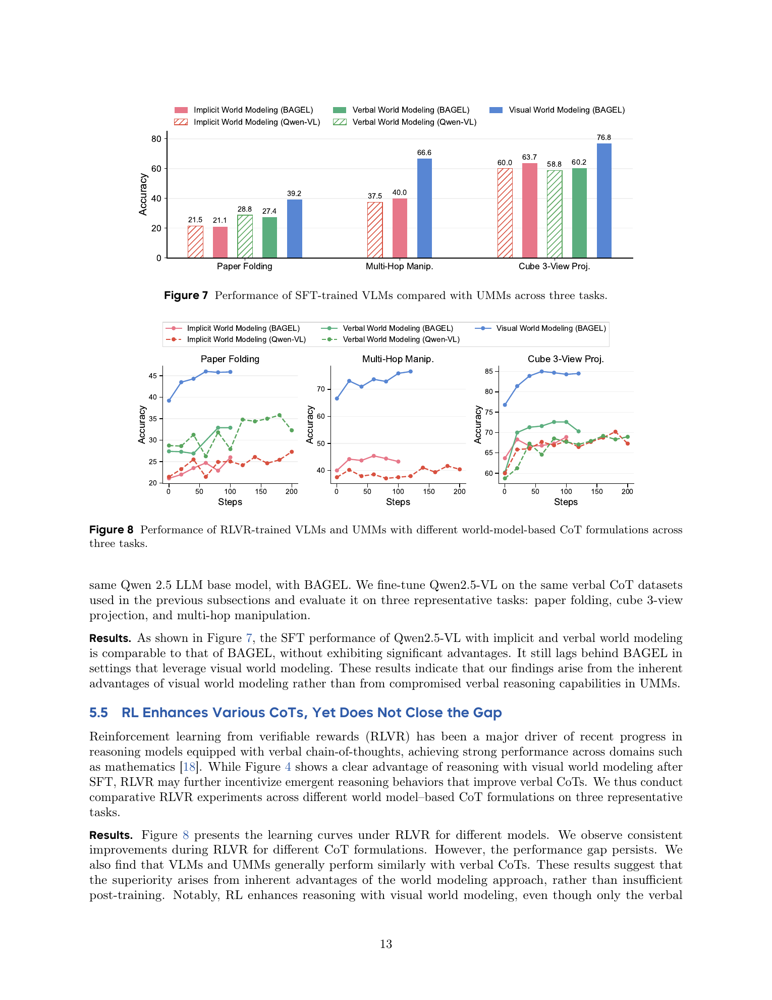

论文在解决什么问题
作者要回答的问题不是“多模态模型会不会生成图片”，而是“图像生成作为推理过程中的中间状态，什么时候能比纯文字思维链更有效”。
现有 LLM/VLM 的推理主要依赖 verbal chain-of-thought。数学题、代码题、逻辑题通常适合这种表示，因为中间状态本身就是符号、变量、约束和自然语言。 但折纸、球反弹、空间方位、三维视角重建这类任务不一样：真正困难的是维护一个随动作变化的空间状态。
纯文字当然可以描述空间状态，例如用坐标、矩阵、对象列表、方向关系。但这种描述经常遇到三个问题： 第一，状态写起来很长；第二，局部关系容易漏；第三，模型的语言预训练分布里未必有足够多“折纸每一步如何展开”的详细文本。 视觉生成则可能更自然：一张中间图可以同时承载轮廓、位置、遮挡、方向、对称和运动轨迹。
理论框架：world model 如何进入 CoT
论文用 multi-observable MDP 描述任务世界：真实状态隐藏在背后，模型只能通过不同模态、不同视角的 observation 来推理。
World reconstruction
从有限观察恢复当前世界结构，并生成未见过的新视角。例如从一个等轴视图和两个正交视图重建立方体堆叠，再想象背面视角能看到几个指定颜色的方块。
novel view synthesis mental rotation partial observationWorld simulation
根据当前状态和动作预测未来观察。例如折纸一步步展开、球按镜面反射运动、物体场景经过多步操作后更新布局。
state transition physical dynamics planning
普通 CoT 可以写成一串文字步骤 r1, r2, ...。论文进一步把每一步写成 (r_i, o_i)：
r_i 是文字推理，o_i 是该步生成或维护的观察。观察可以是空的、文字的、符号矩阵的，也可以是图像。
这个抽象让“视觉生成”有了明确位置：它就是 o_i，即推理中的显式 visual observation。

原论文页面截图：这一页展示了 VisWorld-Eval 的任务构成和强模型零样本表现。HTML 使用本地 PDF 截图，方便离线核对。
三种 CoT/world model 形式
论文的实验核心是控制变量：同一类任务、同一基座模型、不同中间状态表示方式。
| 形式 | 中间 observation | 优势 | 风险 |
|---|---|---|---|
| Implicit WM | o_i = empty，状态藏在 hidden states 中。 |
不引入显式生成错误；适合 Maze 这类低维坐标状态。 | 复杂状态难以稳定保存在内部表示里，学习难度高。 |
| Verbal WM | 文字、坐标、矩阵、对象列表、符号视图。 | 可读、可检查、对符号任务很自然。 | 表达空间几何、遮挡、轨迹和视角变化时会变长且易错。 |
| Visual WM | 文字步骤中插入生成图像，形成 interleaved verbal-visual CoT。 | 自然承载形状、位置、运动和遮挡；更接近视觉预训练先验。 | 图像生成本身可能 hallucinate，且计算成本更高。 |
VisWorld-Eval：到底测什么
VisWorld-Eval 是一个问答式评测套件，答案短且可验证，核心指标是 accuracy。它不测图像美观度，也不是开放聊天。
| 任务 | 能力 | 训练/测试样本 | 为什么需要 world model |
|---|---|---|---|
| Paper folding | Simulation | 2,357 / 480 | 需要模拟折纸展开、孔洞镜像和形状计数。 |
| Multi-hop manipulation | Simulation | 2,000 / 480 | 多步添加、删除、换色、换形状后维护最终空间布局。 |
| Ball tracking | Simulation | 2,254 / 1,024 | 需要预测理想反射轨迹和首个进入的洞。 |
| Maze | Simulation | 8,448 / 480 | 状态只是 5x5 坐标和墙，低维符号表示已足够。 |
| Sokoban | Simulation | 7,715 / 480 | 需要维护玩家、箱子、目标位置和动作序列。 |
| Cube 3-view projection | Reconstruction | 2,500 / 480 | 从部分视角重建 3D 结构，再生成未见视角。 |
| Real-world spatial reasoning | Reconstruction | 10,661 / 522 | 从真实图片的有限视角判断相机、物体、区域方位。 |
评估协议很关键：论文主要评 post-trained UMM，而不是只看 base model 零样本。 这样做是为了减少“模型不会输出 interleaved 图文格式”的混杂因素，更接近回答“如果我们训练它使用视觉 scratchpad，它是否真的有收益”。
训练与评估流程
主模型是 BAGEL。SFT 同时训练文字推理和视觉中间图；RLVR 阶段只直接优化文字生成，视觉生成通过 KL 约束保持稳定。
SFT 数据
规则模板、搜索算法、Seed/Gemini 改写与过滤，构造 implicit/verbal/visual 三种 CoT 格式。
SFT 损失
文字部分用 cross-entropy，视觉部分用 flow-matching/MSE 风格目标，CE:MSE loss weight 为 1:10。
RLVR
用 GRPO 根据最终可验证答案优化；视觉生成不直接吃 reward，而是用相对 SFT reference 的 KL 正则。
这个训练设计让我比较信服的一点是：论文没有简单地把视觉中间图当成最终监督标签，而是把它放入推理轨迹中。 特别是 RLVR 结果显示，即便只直接优化文字生成，visual world modeling 的领先差距仍然存在，说明收益不只是“图片被单独训练得更像标签”。
主要实验结果
视觉 world model 在 paper folding、multi-hop manipulation、ball tracking、cube 3-view、MMSI 指定子任务上有明显优势。
| 任务 | Implicit WM | Verbal WM | Visual WM | 我的解读 |
|---|---|---|---|---|
| Paper folding | 21.1 | 27.4 | 39.2 | 矩阵能记录孔洞，但很难自然表达纸张轮廓和连续镜像。 |
| Multi-hop manipulation | 40.0 | 不适用 | 66.6 | 多步空间布局更新更像“可视化状态追踪”，语言描述容易丢对象关系。 |
| Ball tracking | 40.7 | 不适用 | 57.6 | 反射轨迹天然适合图像/轨迹表示，纯文字很难精确维护几何路径。 |
| Cube 3-view projection | 60.2 | 63.7 | 76.8 | 视觉预训练中有大量旋转和视角变化先验，字符矩阵没有这种自然先验。 |
| MMSI Cam.-Obj. | 46.5 | 不适用 | 60.9 | 真实场景的新视角想象很难完全用文字描述，视觉生成提供 grounding。 |
| MMSI Cam.-Reg. | 37.3 | 不适用 | 54.4 | 提升明显，但整体真实场景仍受生成质量和方位理解限制。 |

原论文页面截图：Figure 4 展示 SFT-trained UMM 在不同 world-model CoT 形式下的 accuracy。
样本效率
Paper folding 中，visual world modeling 用超过 4 倍更少的 SFT 样本达到与 verbal world modeling 相近的表现。 这支持“视觉模态先验更贴近折纸动态”的解释。
中间 world model fidelity
Cube 3-view 中，视觉中间视图的结构 fidelity 明显高于字符矩阵，且在 stack size 6 的 OOD 设置仍保持优势。 这说明最终答案提升与中间状态质量相关，不只是答案格式碰巧正确。

原论文页面截图：Figure 6 包含样本效率、cube world-model fidelity、maze 隐式状态 probing；Figure 7 对照 Qwen2.5-VL。
失败边界：什么时候视觉生成没用
Maze 和 Sokoban 是这篇论文里最重要的反例：它们证明 visual world model 不是万能增强器。
| 任务 | Implicit WM | Verbal WM | Visual WM | 原因 |
|---|---|---|---|---|
| Maze | 77.0 | 73.1 | 70.6 | 5x5 坐标状态很小，模型 hidden states 已能隐式维护；画图增加生成错误。 |
| Sokoban | 29.6 | 36.8 | 39.3 | 视觉略好但不大，说明低维网格任务中符号状态已很有效。 |
论文用 probing 支持 Maze 结论：把 CoT 中的显式坐标 mask 掉，然后取 masked token 的 hidden representation，训练两层 MLP 预测真实坐标。 随机初始化模型失败，预训练 BAGEL 已有一定状态可预测性，SFT 后接近完美。这说明模型内部确实能隐式维护小迷宫状态。
我的 insight：这篇论文真正说明了什么
它最强的地方不是视觉生成本身，而是提出了“中间状态表示选择”这个问题。
未来的 CoT 不应只有一种形态。模型应根据任务选择 verbal、visual、symbolic、programmatic 或 simulator world model。
我认为成立的部分
论文的正反证据比较完整：视觉 world model 在复杂空间/物理任务上显著提升；在 Maze/Sokoban 上收益有限；样本效率、fidelity、VLM 对照和 RLVR 对照又从不同角度支持解释。 因此，“视觉生成在某些物理空间任务中作为 world model 有价值”这个结论是可信的。
我认为需要谨慎的部分
第一，实验主要是 task-specific post-training，不是证明现成通用模型零样本就自然会视觉思考。 第二，视觉 CoT 数据构造依赖规则模板、教师模型改写和过滤，成本不低。 第三，视觉中间图仍会 hallucinate；真实世界任务中还有模糊、颜色错误、方位误解和细节损坏。
最有价值的抽象
我会把这篇论文抽象为一句设计原则：推理系统的上限不只由模型大小和 reward 决定，也由中间状态的表示形式决定。 如果任务状态是几何的，就不要强行压成语言；如果任务状态是符号的，也不要强行画图。

原论文页面截图：Figure 8 展示 RLVR 后不同 CoT 形式的学习曲线。RL 提升各类 CoT，但没有消除 visual world modeling 的领先差距。
如果要把它用于自己的研究/系统
这篇论文给出的不是一个单一 recipe，而是一套选择中间 world model 的判断准则。
用 verbal/symbolic
数学、代码、小网格、表格状态、坐标足够表达的任务。
用 visual
折叠、旋转、遮挡、轨迹、视角转换、真实空间方位任务。
用 tool/simulator
当任务有精确规则或安全要求时，程序化仿真通常比像素生成更可靠。
我建议后续研究往三个方向推进：第一，做一个 router，让模型判断当前任务需要哪种 world model； 第二，对视觉中间状态做可验证检查，例如 self-consistency、多视角一致性、结构解析； 第三，把 visual world model 从普通像素图扩展到 sketch、scene graph、3D latent 或可执行 simulator state。
本报告基于 arXiv PDF、官方 GitHub README、官方 VisWorld-Eval 数据说明和本地抽取文本整理。
本地参考文件位于 ../refs/2601.19834.pdf 与 ../refs/2601.19834.txt。